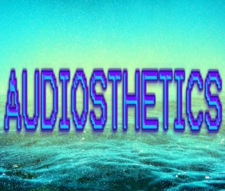

A spooky tune from the demigod to get you in the mood for fall
Tan finishing an old track into a lovely melody
demigod trying his hand in the vapor arts
G hittin us with an intense new edit to one of the greatest sword fight scenes of all time
moody visuals over this brand new track from the demigod has me HYPE for the new Blade Runner flick
-AUDIOSTHETICS IS LIVE-

Welcome to Audiosthetics, a place to discover new music with a strong video element. Custom art, music videos, and visual edits are on display throught this site.
In addition to being a one stop shop for all Strange Dynamics and affiliates, we will be sharing other music and videos we enjoy, and playlists and reviews to help discover and compile this form of entertainment.
Our email is AUDIOSTHETICS@GMAIL.COM , thanks for stopping by and enjoy the site.
08/24/17 lol
After a few copyright notice takedowns delayed and caused changes to the mix, the 4th and final installement of galexy's Seasons Series is released.
Rustie X Porter Robinson - Big Catzz (galexy's Faded Brightside mashup), 3 songs mashuped up to a porter classic
The latest incarnation of our own many-faced god, Kiroku has released a beattape of 10 lo-fi mixes.1
demigod put up 3 new beats over the past week, inspirations from blade runner to the Dark side of the moon, some of his best work yet.
08/24/2017 ARTICLE
{kind=link}
Still not totally sure what qualifies as Vaporwave, and what is just slowed down Diana Ross? This chart was compiled by the good folks on 4chan's music board. it has a list of vaporwave essentials, including most of the albums that helped create the genre. Close your eyes, imagine your favorite dystopia through a retro 90's filter, and enjoy.